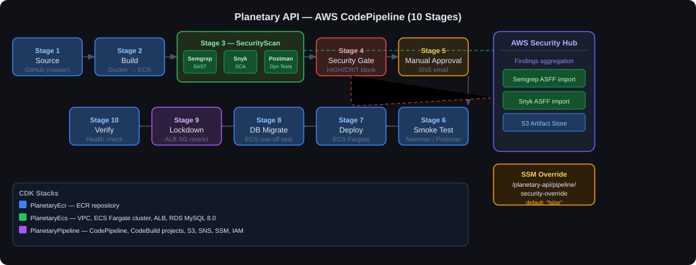
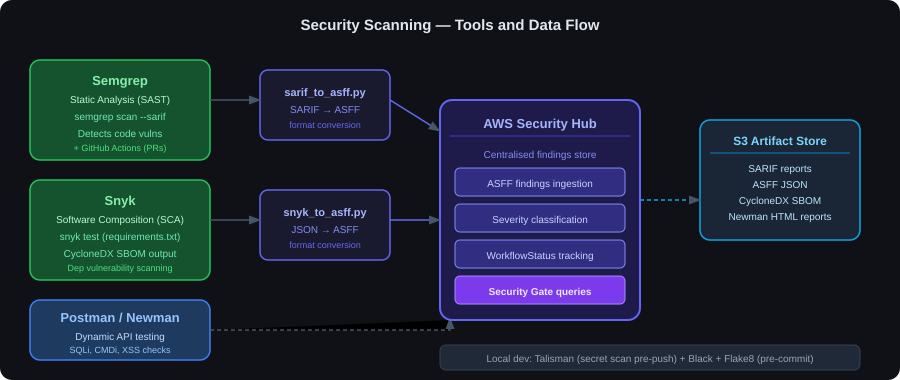
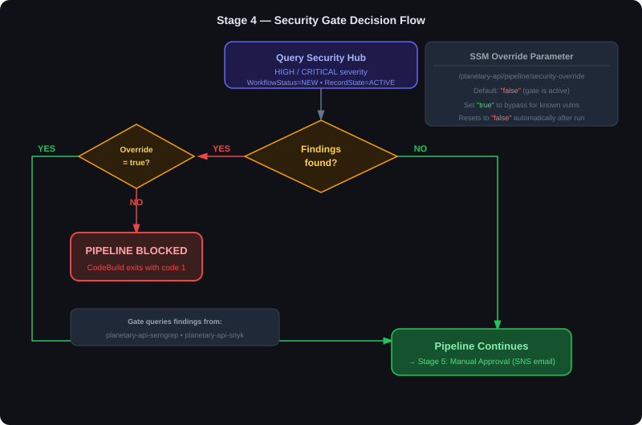

A walkthrough of the planetary-api pipeline — 10 stages of AWS CodePipeline with Semgrep, Snyk, Postman, and Security Hub doing the heavy lifting.
I built planetary-api as a security training tool. It's a Flask API that deliberately contains vulnerable code — SQL injection, command injection, path traversal, SSRF — right alongside secure implementations of the same endpoints. The idea is to show the contrast in a realistic environment.
One side effect of that design is it makes a good test case for a security pipeline. The pipeline has to detect real vulnerabilities, report them centrally, and block the deployment — while also giving me a way to override the gate when the vulnerabilities are intentional. Here's how that works.

Three CDK stacks provision everything from scratch:
| Stack | What it creates |
|---|---|
| PlanetaryEcr | ECR repository for the Docker image |
| PlanetaryEcs | VPC, ECS Fargate cluster, ALB, RDS MySQL 8.0 (db.t3.micro) |
| PlanetaryPipeline | CodePipeline, all CodeBuild projects, S3 bucket, SNS, SSM parameters, IAM roles |
Deploy the stacks in order — ECR, then ECS, then Pipeline — and the pipeline connects to GitHub via CodeStar and triggers on pushes to master.
I log into Docker Hub before authenticating to ECR. CodeBuild's shared outbound IPs hit Docker Hub rate limits without credentials, so this saves a lot of frustrating build failures. Both credentials come from Secrets Manager — nothing stored in the buildspec.
pre_build:
commands:
- echo $DOCKERHUB_PASSWORD | docker login -u $DOCKERHUB_USERNAME --password-stdin
- aws ecr get-login-password | docker login --username AWS --password-stdin $ECR_REPO
build:
commands:
- docker build -t $IMAGE_REPO_NAME:$COMMIT_SHA .
- docker tag $IMAGE_REPO_NAME:$COMMIT_SHA $ECR_REPO:$COMMIT_SHA
- docker tag $IMAGE_REPO_NAME:$COMMIT_SHA $ECR_REPO:latest
post_build:
commands:
- docker push $ECR_REPO:$COMMIT_SHA && docker push $ECR_REPO:latest
- printf '[{"name":"%s","imageUri":"%s"}]' "$CONTAINER_NAME" "$ECR_REPO:$COMMIT_SHA" > imagedefinitions.jsonThe image is tagged with the commit SHA and as :latest. The imagedefinitions.json is what ECS uses later in Stage 7 to know which specific image to deploy.
Stage 3 runs three CodeBuild actions simultaneously, each covering a different layer of the security picture.

Semgrep scans the source code looking for vulnerability patterns. I run it with --config=auto, which pulls in Semgrep's maintained ruleset automatically. Output is SARIF format.
semgrep scan --config=auto --sarif --output=semgrep.sarif .AWS Security Hub expects findings in ASFF (Amazon Security Finding Format), not SARIF. I wrote sarif_to_asff.py to handle the conversion and batch-import the results. The raw SARIF and converted ASFF files both go to S3 for auditing.
Semgrep also runs in GitHub Actions as a PR check, so you get static analysis feedback before anything hits the main pipeline. Two bites at the same apple.
Software Composition Analysis (SCA) scans your dependencies, not your code. Snyk checks requirements.txt against its database and flags anything with a known CVE. I also generate a CycloneDX SBOM alongside the scan:
snyk test --file=requirements.txt --json > snyk_results.json || true
cyclonedx-bom -r -o bom.xmlThe || true stops Snyk's non-zero exit from killing the buildspec before I've exported the results. The conversion script snyk_to_asff.py then translates the JSON to ASFF and imports it to Security Hub. S3 gets the SBOM, raw results, and ASFF.
Dynamic testing means actually running the API and firing requests at it. The buildspec spins up MySQL and the API container in Docker-in-Docker, waits for health checks to pass, then runs Newman against the "Security" test folder. That folder has test cases for SQL injection payloads, command injection, and XSS.
docker-compose up -d
sleep 20
newman run postman/planetary-api.postman_collection.json \
--folder Security \
--environment postman/local.postman_environment.json \
--reporters cli,junit,html \
--reporter-junit-export newman-results.xml \
--suppress-exit-codeThe --suppress-exit-code is intentional. I don't want Newman failures to kill this stage immediately — I want all three scans to complete and report their findings to Security Hub. The gating happens in Stage 4.

Once all three scans finish, the security gate queries Security Hub for active findings at HIGH or CRITICAL severity from the Semgrep and Snyk generators:
aws securityhub get-findings \
--filters '{
"GeneratorId": [
{"Value": "planetary-api-semgrep", "Comparison": "CONTAINS"},
{"Value": "planetary-api-snyk", "Comparison": "CONTAINS"}
],
"SeverityLabel": [
{"Value": "HIGH", "Comparison": "EQUALS"},
{"Value": "CRITICAL", "Comparison": "EQUALS"}
],
"WorkflowStatus": [{"Value": "NEW", "Comparison": "EQUALS"}],
"RecordState": [{"Value": "ACTIVE", "Comparison": "EQUALS"}]
}'If findings exist, it checks an SSM parameter: /planetary-api/pipeline/security-override. Default is "false". False + findings = exit code 1, pipeline blocked.
"true" via aws ssm put-parameter. The buildspec resets it back to "false" at the end of the gate stage, so it's a one-use bypass, not a persistent switch.The gate doesn't try to prevent vulnerabilities from existing — it makes the decision to ship them explicit. You have to actively choose to override it. That's the point: risk becomes visible and auditable rather than quietly slipping through.
Even after the security gate passes, a human signs off before anything hits production. SNS sends an email with a link directly to Security Hub, so the approver can check the current findings before deciding. Nobody deploys without that step.
Stage 6 runs the Postman "Basic" and "Negative" functional test folders via Newman against a local container — a quick sanity check before touching production.
Stage 7 triggers the ECS rolling deployment using the imagedefinitions.json from Stage 2. ECS pulls the specific commit-SHA-tagged image and updates the service.
Stage 8 runs a one-off ECS task to execute flask db_create && flask db_seed against the production RDS instance. Both commands are idempotent, so running them on every deploy is safe.
Stage 9 optionally locks the ALB security group to a specific CIDR. Set the AllowedIp pipeline variable and it revokes all existing port-80 inbound rules and replaces them with that single CIDR. Leave it blank and the ALB stays open.
Stage 10 waits 15 seconds for ECS to stabilise, then fires a live health check at the ALB DNS name. If the lockdown stage ran with a specific IP, this stage skips the check — CodeBuild runs from a different IP and would fail the curl regardless.
Every credential comes from Secrets Manager at runtime. Docker Hub credentials, Snyk token, Semgrep token, database password — none of it is in the buildspec or environment variables. The S3 artifact bucket is versioned, encrypted, and has all public access blocked.
env:
secrets-manager:
DOCKERHUB_USERNAME: "planetary-api/dockerhub:username"
DOCKERHUB_PASSWORD: "planetary-api/dockerhub:password"
SNYK_TOKEN: "planetary-api/snyk:token"
SEMGREP_APP_TOKEN: "planetary-api/semgrep:token"The pipeline isn't doing this alone. Talisman blocks pushes that contain secrets before code even reaches GitHub. Black and Flake8 run as pre-commit hooks. And Semgrep runs again in GitHub Actions on PRs, so you're seeing static analysis at review time rather than waiting for a full pipeline run.
| Tool | Type | Where it runs |
|---|---|---|
| Semgrep | SAST | CodeBuild (pipeline) + GitHub Actions (PRs) |
| Snyk | SCA | CodeBuild (pipeline) |
| CycloneDX | SBOM generation | CodeBuild (pipeline, alongside Snyk) |
| Postman/Newman | Dynamic API tests | CodeBuild (stages 3 and 6) |
| AWS Security Hub | Finding aggregation | All scan stages report here |
| Talisman | Secret scanning | Local (pre-push hook) |
| Black + Flake8 | Linting | Local (pre-commit hook) |
The layered approach is what I'm happiest with here. Local hooks, GitHub Actions SAST on PRs, and then the full pipeline scan before anything ships — three chances to catch something before it matters.
The intentional vulnerabilities actually make this a better demo than a clean codebase would. The pipeline flags them, Security Hub logs them, and the gate blocks on them. You have to make an active decision to override. That feels like the right behaviour for a security pipeline: not quietly ignoring risk, but making it visible and forcing a conscious choice.
CDK stacks and buildspecs are all at github.com/andyrat33/planetary-api.